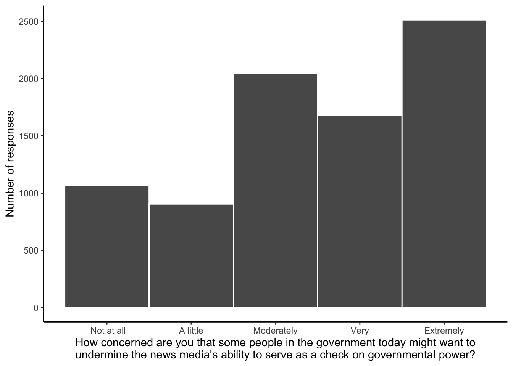
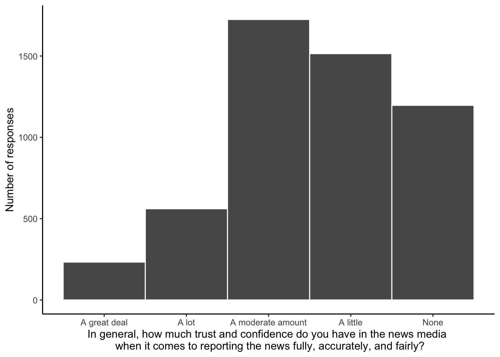

install.packages("devtools")
devtools::install_github("jamesmartherus/anesr")Lab 3: Data preparation
You should begin this session with variables from the ANES 2016 dataset in mind for your analysis. In class we will introduce the R language and RStudio environment, and demonstrate necessary data cleaning and manipulation in preparation for analysis. By the end of the class you should have modified the example code to work with your selected variables.
Goals
- Get your R environment set up
- Read the data you need into R
- Select required variables
- Filter the data based on completeness (and any other criteria)
- Compute any required variables (scale means, number of items missing, etc)
- Describe and visualize your variables
Working with data in R
Getting R ready
In addition to containing a Big 5 personality scale, the ANES 2016 dataset is convenient for our purposes because someone went to the trouble of creating an R package which makes working with the ANES data relatively straightforward (not that you won’t still run into issues!): anesr (github.com/jamesmartherus/anesr).
To start exploring the data in R, you first need to set up your environment. This means installing the anesr package. Usually packages can be installed from within R using the install.packages() function. However since the anesr package is hosted on GitHub (as opposed to the official R repository of packages), the easiest way to install it is by first installing the devtools package, which has a special function for installing packages from GitHub.
We will also use some other packages for data wrangling and analysis. Developers have created a collection of packages for R called the tidyverse to make coding these common tasks easier. The tidyverse can be installed like so:
install.packages("tidyverse")If you execute those lines of code the packages will be installed on your system. That step only needs to be done once, but you need to ‘activate’ the packages using library() to make their functions and data available each time to start a new R session.
library(anesr)
library(tidyverse)Getting data into R
Getting data into R often involves reading in a .csv (comma-separated values) spreadsheet file that you downloaded to your computer. Indeed, you could download the ANES 2016 data file as a .csv from the ANES website and read it into R that way. However, the anesr package contains the data so you don’t need to download it separately. Instead you can make it available by running this line of code:
data(timeseries_2020)When you execute the code you won’t see any output, but you should see the name timeseries_2016 appear in your Environment pane. That is now an object in R called a data.frame. You can think of it as a spreadsheet like you’re familiar with from Excel or Google Sheets; a set of columns, one for each variable in the dataset, and a row for each participant’s answers.
Typing the name of the data.frame and running that line of code will show the first few columns and rows.
timeseries_2020# A tibble: 8,280 × 1,381
version V200001 V160001_orig V200002 V200003 V200004 V200005 V200010a
<chr> <dbl> <hvn_lbll> <hvn_l> <hvn_l> <hvn_l> <hvn_l> <dbl>
1 ANES2020TimeSe… 200015 401318 3 2 -2 0 0.828
2 ANES2020TimeSe… 200022 300261 3 2 -2 0 1.09
3 ANES2020TimeSe… 200039 400181 3 2 -2 0 0.672
4 ANES2020TimeSe… 200046 300171 3 2 -2 0 0.492
5 ANES2020TimeSe… 200053 405145 3 2 -2 1 1.19
6 ANES2020TimeSe… 200060 400374 3 2 -2 0 0.339
7 ANES2020TimeSe… 200084 407013 3 2 -2 0 0.525
8 ANES2020TimeSe… 200091 407174 3 2 -2 0 0.729
9 ANES2020TimeSe… 200107 406264 3 2 -2 0 1.42
10 ANES2020TimeSe… 200114 402782 3 2 -2 1 2.56
# ℹ 8,270 more rows
# ℹ 1,373 more variables: V200010b <dbl>, V200010c <dbl>, V200010d <dbl>,
# V200011a <dbl>, V200011b <dbl>, V200011c <dbl>, V200011d <dbl>,
# V200012a <dbl>, V200012b <dbl>, V200012c <dbl>, V200012d <dbl>,
# V200013a <dbl>, V200013b <dbl>, V200013c <dbl>, V200013d <dbl>,
# V200014a <dbl>, V200014b <dbl>, V200014c <dbl>, V200014d <dbl>,
# V200015a <dbl>, V200015b <dbl>, V200015c <dbl>, V200015d <dbl>, …You can also click on the name in the Environment pane to view the data in a new tab.
Select your variables
As you can see, the data.frame contains a lot of variables; there are 1,381 columns of data, one for each recorded variable. You’ll only need two of those. So the first step is selecting just the variables you need to work with.
There are a lot of ways to do this. The simplest would be to make a note of the variable IDs from the codebook and use the select() function.1 This allows us to simply type in variable names separated by commas.
For this example code I’ll look at two variables similar to those I had you pick from: trust in news media (In general, how much trust and confidence do you have in the news media when it comes to reporting the news fully, accurately, and fairly?) and concern that government might undermine media (How concerned are you that some people in the government today might want to undermine the news media’s ability to serve as a check on governmental power?). Their variable IDs are V201377 and V201376 respectively. Since I’ll probably forget which ID is which, I’ll give the columns more meaningful names as I select them.
my_data <- timeseries_2020 |>
select(trust = V201377,
concern = V201376) |>
haven::zap_labels()Let’s see what this new data.frame looks like:
my_data# A tibble: 8,280 × 2
trust concern
<dbl> <dbl>
1 1 1
2 1 1
3 3 5
4 4 3
5 2 4
6 4 4
7 2 5
8 1 1
9 3 2
10 3 2
# ℹ 8,270 more rowsIt all looks good so far. But if you inspect the data more extensively (click the name in your Environment to open a tab showing the data and scroll down a bit) you’ll notice that there are some negative numbers in the data. That’s from survey codes which record missing data. If you try to calculate an average score with those included it’ll mess up the sums, so we need to do some data cleaning to handle things like that.
Cleaning the data
There are a lot of different ways we could handle this. One way is to filter() the data, retaining only rows which meet certain conditions.2
The ANES coding scheme uses negative values for the various kinds of missing or inappropriate data, which makes things simple: only positive values are valid and should be retained.
To implement this as a filter(), we can use the if_all() function; i.e., we are going to select some columns and if all the values in those columns meet some condition the row will be retained. To select the columns we can use the everything() function, since the positive-valid/negative-invalid rule is true of every column in our data. The part after the comma, ~ . >= 0, articulates the condition. The ~ prefix is necessary because instead of naming one specific column to refer to its values we use . as a placeholder representing the values in each of the selected columns; the value must be greater than or equal to 0 to be retained.3
my_data_complete <- my_data |>
filter(if_all(everything(), ~ . >= 0))Notice that the number of rows in the data.frame has changed, because rows that didn’t meet that condition have been dropped.
nrow(my_data)[1] 8280nrow(my_data_complete) [1] 8211After filtering to keep only rows with complete data, we’re left with 8,211 valid responses.
Recoding values
Now that we have selected our columns and filtered out missing/invalid responses, the last thing to do is recode values so they all mean what we want them to mean.
Notice that valid responses for the “undermine the news media” concern item are 1 (not at all concerned) through 5 (extremely concerned). I want higher scores on that question to indicate greater concern, so that’s fine. So the “trust in news media” question, responses are 1 (none) though 5 (a great deal). But I’m thinking of the psychological construct as distrust rather than trust, so I want higher scores to indicate more distrust. The solution is simple: just recode the answers so that a score of 1 becomes a 5 (the most distrust), 2 becomes 4, 3 stays 3, 4 becomes 2 and 5 becomes 1 (the least distrust).
my_data_complete <- my_data_complete |>
mutate(distrust = 6 - trust) |>
select(-trust) # don't need the original trust column any moreNow I have my two variables, concern about the news media, and (reverse-coded) distrust of the news media, for each of the 8,211 participants with complete data. We’re ready to start exploring the data.
Start examining the data
Descriptive statistics
The most common descriptive statistics are the mean (\(M\)) and standard deviation (\(SD\)). You should report these for each variable in your analysis.
mean(my_data_complete$concern)[1] 3.446718sd(my_data_complete$concern)[1] 1.363856mean(my_data_complete$distrust)[1] 3.54086sd(my_data_complete$distrust)[1] 1.208428Visuaizating distributions
In addition to reporting the mean and standard deviation, it is useful to visualize the distribution of the data. This can reveal nuances that are not obvious in those single numeric summary values.
As with most things, there are a lot of different ways of producing graphs using R. One of the most widely used and powerful is the ggplot2 package.4 The name refers to the idea of the “grammar of graphics”, and it is built around a layering approach. You first specify your data and aesthetics (what should data will go on the x and y axes), then geometry (do you want data to be represented by points or bars or as a histogram?), any scaling (e.g. what values should be labeled on each axis), and theme elements (how do you want the plot to look generally?). There can be a lot of complexity, but building things up layer by layer, gradually adding and refining elements, is a powerful and satisfying approach.
Here’s a simple histogram of the concern item. I pipe the data into the ggplot() function, specifying that I want the concern column to be represented as the x aesthetic. Then I add geometry using geom_histogram. That geom function automatically computes bins and counts; here I just specify I want a binwidth of 1, i.e. each column of the histogram will represent one scale point. Note that ggplot layers are added using + rather than the usual |> pipe.
my_data_complete |>
ggplot(aes(x = concern)) +
geom_histogram(binwidth = 1)
The default theme is perfectly serviceable, but you can customize every element. Here I’ll specify a couple of aspects using the theme() function, and I’ll assign it to the name theme_apa. Then I can always add theme_apa as a layer to my plots going forward.
theme_apa <- theme(
panel.background = element_blank(),
axis.line = element_line()
)I’ll also customize the “breaks” on the x-axis (where the ticks and numeric labels go) and the axis labels.
my_data_complete |>
ggplot(aes(x = concern)) +
geom_histogram(binwidth = 1, color = "white") +
scale_x_continuous(breaks = 1:5,
labels = c(" Not at all", "A little", "Moderately", "Very", "Extremely")) +
labs(x = "How concerned are you that some people in the government today might want to undermine the news media’s ability to serve
as a check on governmental power?",
y = "Number of responses") +
theme_apa
Here’s a histogram of the distrust item.
my_data_complete |>
ggplot(aes(x = distrust)) +
geom_histogram(binwidth = 1, color = "white") +
scale_x_continuous(breaks = 1:5,
labels = c("A great deal", "A lot", "A moderate amount", "A little", "None")) +
labs(x = "In general, how much trust and confidence do you have in the news media \n when it comes to reporting the news fully, accurately, and fairly?",
y = "Number of responses") +
theme_apa
The
select()function, along withfilter(),mutate(),across(),everything(), and others that you’ll see in my example code, is part of thetidyversefamily of packages (specifically these all come from thedplyrpackage, but we’ll also use functions from othertidyversepackages liketidyrandggplot2). There are other ways to do all these things without usingtidyversepackages, just relying on what’s referred to as “base” R functions. Thetidyverseapproach just makes this kind of data manipulation generally easier and makes the code more interpretable. If you’re curious to see how base R and tidyverse functions differ in syntax, a good place to start is https://dplyr.tidyverse.org/articles/base.html.↩︎Another way would be to
mutate()the data, changing the invalid response codes into the valueNA, R’s special value to indicate missing data. This could be achieved like so:my_data_complete <- my_data |> mutate(across(everything(), ~replace(., . < 0, NA)))That would mutate (i.e. change values) across every column. You can read the second part (after the
~) as “replace the original values (indicated by the placeholder.), where the value is less than zero, withNA.↩︎If the data wasn’t as simple or if we just wanted to be more explicit about things, we could filter based on valid responses for each item. For example, valid reponses to the feeling thermometer item are are anything from 0 to 100; anything else is invalid. Therefore we could write a
filter()condition stating thatfeeling_thermometer(the name of the column) values must be%in%the set of values from0:100. Likewise for each of the extraversion columns, rows will be retained only if their values are%in%the range1:7.
↩︎my_data_complete <- my_data |> filter(trust %in% 1:5, concern %in% 1:5)The
ggplot2package is part of thetidyverse, so because we already ranlibrary(tidyverse)earlier theggplot2functions are already available to us. If you needed to, you could always runlibrary(ggplot2)to activate it separately.↩︎